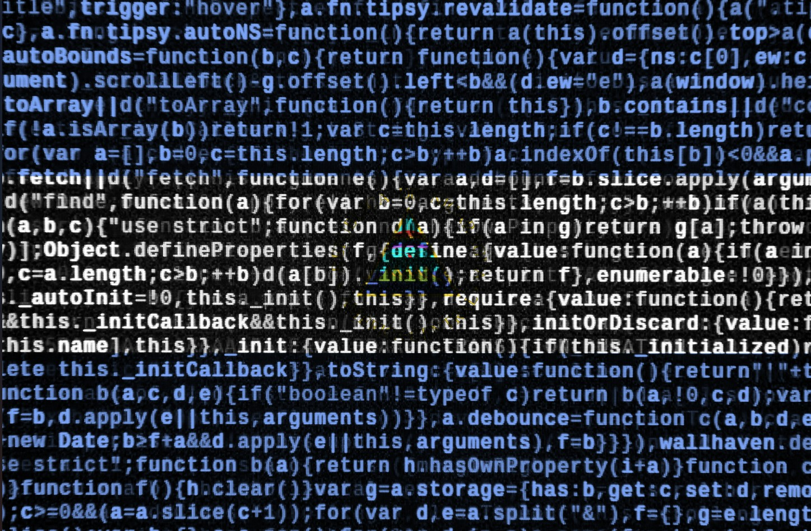

Endpoint Detection and Response (EDR)

Endpoint Detection and Response (EDR) Services
In today’s complex threat landscape, traditional antivirus solutions are no longer enough to protect endpoints—your laptops, desktops, servers, and mobile devices—from advanced cyberattacks. Endpoint Detection and Response (EDR) is a modern security solution designed to continuously monitor, detect, and respond to suspicious activity on endpoints in real time.
Our EDR service provides comprehensive visibility and rapid response capabilities, helping your security team identify threats early and contain them before they cause damage.
Key Features of Our EDR Service:
Continuous Endpoint Monitoring
Tracks all endpoint activities to spot anomalies and suspicious behavior instantly.
Real-Time Threat Detection & Alerting
Detects malware, ransomware, fileless attacks, insider threats, and zero-day exploits.
Automated Response & Remediation
Enables quick isolation, quarantine, or rollback of compromised endpoints to limit damage.
Forensic Analysis & Threat Hunting
Provides detailed investigation tools to understand attack vectors and improve defenses.
Comprehensive Reporting & Analytics
Delivers actionable insights to improve your security posture and compliance.
Integration with SIEM and XDR Platforms
Seamlessly connects with your existing security tools to enhance visibility, threat correlation, and response coordination.
Why Choose Us?
Expert deployment and ongoing management
Integration with your existing security infrastructure
Tailored to fit your organization’s size and risk profile
24/7 monitoring and support from certified security professionals
Protect Your Endpoints, Protect Your Business
Endpoints are often the entry point for cyberattacks. Our Endpoint Detection and Response service ensures you detect threats early, respond fast, and reduce the risk of costly breaches.
Discuss This Service